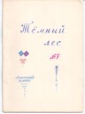

Тёмный лес
N7

БАЛЛАДА О ВОЖДЕ И ВОИНЕ В СТАРОЙ ШКУРЕ
Шёл дождь,
Били барабаны,
Встал вождь
В одеяньи странном,
Сказал:
"Мы пойдём за море,
Там бал
Всем врагам устроим,
Кострам
Предадим селенья,
Пусть там
Знают разоренье.
Они
Наших убивали,
Одни
Беды мы видали.
Врагам
Отомстим, как надо,
А нам
Серебро и злато".
Шёл дождь,
Били барабаны,
Сел вождь
В одеяньи странном.
Вдруг встал
Воин в старой шкуре,
Сказал,
Заглушаем бурей:
"И те,
Что за морем,- люди.
Вражде
Так конца не будет.
Не мстить
Нужно всем на свете -
Просить
Мира у соседей".
Блести,
Солнце, в луже крови:
Ушли
Воины за море.
Ручьём
Хлещет кровь из раны:
Вождём
В одеяньи странном
Убит
Воин в старой шкуре.
Он спит
Под рыданье бури.
█
Из народного юмора
У гражданина Н. было отличное настроение. Он шёл домой и, желая срезать угол, вошёл через арку в проходной двор.
В песочнице играл мальчик, маленький такой, с нежными голубыми глазами. Он приветливо взглянул на гражданина Н.
- Дядя, дай часы.- раздался доверчивый детский голосок.
- Мальчик, но для чего тебе часы?
- Дай часы, дядь.
- Но, мальчик, мне часы нужны, а тебе они зачем?
- Дядь, дай часы.
Из подъезда вышел здоровенный детина:
- Ну дай ребёнку, что просит.
* * *
Публикуем несколько опечаток из журнала "КОМПАС" (N2, январь 1972).
- "народ платы" (в смысле - планеты)
- "Во тьме стремясь гранит мечой сломать"
- "всяко-го-го рода ошибки"
Читайте этот журнал: в нём вы найдёте много интересного!
* * *
В далёком синем море
Не движется волна,
На дымчатом просторе
Покой и тишина.
Там есть счастливый остров,
Там дикари живут.
Они одеты просто.
Совсем не так, как тут.
И небо голубое
Над ними, как хрусталь...
И солнце золотое,
И даль... такая даль.
И в мире, где лианы,
Но нет железных пут,
Они жуют бананы,
А жвачку не жуют.
Им знанья плод не выдан,
Им чушь не по нутру,
Они с учёным видом
Не слушают муру.
Там нету горьких пьяниц,
Из родника там пьют,
Там,тихий чужестранец,
Найду я свой приют.
█ /Какого-то там числа такого-то месяца на лекции по физ-ре/
СТИХИ О СКУКЕ ОТ СКУКИ
Скучно скушать скуку скучную
Скучно выскучать скушок.
Расскучай скучищу душную,
Скучь её в скучной мешок.
Эх, не скучишь, не раскусишь:
Скук поскукивает пальцем
И показывает скукиш
Заскучавшимся страдальцам.
█ /на лекции/
* * *
Сижу,
пишу,
вожу
рукой,
с тоской
гляжу
на мой
успех.
Он тих...
Для всех
мой стих
и смех,
И грех.
А что?
Никто
пусть не
хвалил,
а мне
он мил.
Пусть всем
и то -
не то,
и тем
плохой...
Зато
он мой!
█
ИЗ СОКРОВИЩНИЦЫ ЛАФАНСКОЙ ЛИТЕРАТУРЫ
В отделе "Из сокровищницы лафанской литературы" будут печататься произведения, по разным причинам не помещённые на страницах журнала в своё время, но популярные в лафанском народе, а также стихи, имеющие исключительно историческое, а не художественное значение.
В этом номере публикуется "ОДА" █, написанная ещё в 1969 году. Лафанский народ обработал и отшлифовал её, убрав всё лишнее и добавив ряд тонких деталей, усиливающих "ОДУ".
ОДА
Слава русскому народу!
Где ещё такой найдёшь?
Разве пьёшь ты, русский, воду?
Нет! Ты, русский, водку пьёшь.
У приезжего невольно
Возникает к вам вопрос:
Почему это возможно?
Как же это началось?
О начале вспомнить можно.
Из истории вот так:
Иоанн Четвёртый (Грозный)
На Руси открыл кабак.
И мужик, нуждой убитый,
Занимал ещё пятак.
Чтобы хоть на час забыться,
Нёс пропить его в кабак.
Богатеет целовальник,
И в казну доход течёт.
Кабаки всё открывают,
Чтобы спаивать народ.
Пол доходов миллионных
С кабаков по всей стране,
Но истории довольно,
Нужно новое тебе.
Всё остреют фельетоны,
Пьянству бой в печати дан,
А завод ликёрогонный
Перевыполняет план.
Недожитки, пережитки...
Где причину отыскать?
Зная прибыль и убытки,
Можно только лишь сказать:
СЛАВА РУССКОМУ НАРОДУ!
█
Последнее изменение страницы 20 Mar 2019
ПОДЕЛИТЬСЯ: